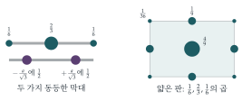

STEP II 1989, 문제 13
계속 읽기 전에 문제를 먼저 읽어 보자. 문제는 STEP Support Programme의 문제 데이터베이스에 있다: step.maths.org/questions/89-s2-q13
도입
균일한 막대는 밀리고 회전할 때 어떻게 반응할까? 놀랍게도 역학의 모든 목적에서 막대는 세 개의 점질량과 정확히 똑같이 행동한다. 양 끝에 각각 질량의 6분의 1, 가운데에 3분의 2를 놓은 것이다. 막대에 무슨 일을 하든(밀든, 어떤 축을 중심으로 돌리든) 막대와 세 입자를 구별할 수 없다.
\(\frac16\), \(\frac23\), \(\frac16\)이라는 수는 낯익어 보일지도 모른다. 이 수들은 심프슨 공식(Simpson’s rule) \(\int_{-a}^{a}f \approx 2a\bigl(\frac16f(-a) + \frac23f(0) + \frac16f(a)\bigr)\)의 가중치로, A 레벨(A level, 영국의 대학 입시 과정)에서 배웠을 수도 있는 수치 적분(numerical integration) 방법이다. 이것은 우연이 아니다. 동역학적으로 동등한(dynamically equivalent) 계와 수치 적분 공식은 같은 문제를 풀고 있는 것이다.
관성 모멘트(moment of inertia)는 2019년에 STEP 출제 범위에서 빠졌다. 어떤 축에 대한 물체의 관성 모멘트는 \(\sum m_id_i^2\), 즉 각 질량에 그 질량과 축 사이 거리의 제곱을 곱한 것의 합이다(연속인 물체라면 적분이 된다). 질량이 \(m\)이고 길이가 \(2a\)인 균일한 막대의 중심을 지나고 막대에 수직인 축에 대한 관성 모멘트는 \(\frac13ma^2\)이다. 평행축 정리(parallel axis theorem)에 따르면, 임의의 축에 대한 관성 모멘트는 질량 중심을 지나는 평행한 축에 대한 관성 모멘트에 \(md^2\)을 더한 것과 같다. 여기서 \(d\)는 두 축 사이의 거리이다.
시작하기 전에
두 계의 질량이 같고, 질량 중심(centre of mass)이 같으며, 질량 중심을 지나는 모든 축에 대한 관성 모멘트가 같다고 하자. 그러면 왜 평행축 정리에 의해 다른 모든 축에 대한 관성 모멘트도 같아지는가?
임의의 축에 대하여 두 관성 모멘트는 모두 (\(O\)를 지나는 평행한 축에 대한 관성 모멘트) \(+ md^2\)과 같다. 첫째 항은 가정에 의해 같고, \(m\)과 \(d\)는 두 계에서 같다.■
차근차근 풀기
단계 1 막대
양 끝에 질량 \(p\)를, 가운데에 질량 \(q\)를 놓자. 대칭성에 의해 질량 중심은 맞는다. 전체 질량과, 중심을 지나는 수직인 축에 대한 관성 모멘트로부터 어떤 조건이 필요한가?
\(2p + q = m\)이어야 하고, 가운데를 지나는 수직인 축에 대한 관성 모멘트가 \(\frac13ma^2\)이어야 하므로 \(2pa^2 = \frac13ma^2\)이다. 따라서 \(p = \frac16m\), \(q = \frac23m\)이다.
이것은 수직인 축뿐만 아니라 중심을 지나는 모든 축에 대해 성립하는가?
중심을 지나고 막대와 각 \(\psi\)를 이루는 축에 대하여, 막대를 따라 거리 \(r\)에 있는 점은 축에서 거리 \(r\sin\psi\)만큼 떨어져 있다. 따라서 (막대이든 입자들이든) 모든 관성 모멘트는 수직인 축에 대한 값의 \(\sin^2\psi\)배이고, 두 값은 모든 \(\psi\)에 대해 일치한다. (막대를 포함하는 평면 위에 있지 않은 축도 마찬가지이다. 중요한 것은 각 점과 축 사이의 거리뿐이고, \(O\)를 지나는 직선 위의 점에 대해서는 이 거리가 \(r\)에 비례한다.) 그러므로 막대는 질량 \(\frac16m\), \(\frac23m\), \(\frac16m\)과 동역학적으로 동등하다.■
단계 2 직사각형
얇은 판(lamina)을 한 변에 평행한 얇은 띠들로 자르자. 각 띠를 그와 동등한 세 입자로 바꾸자. 무엇을 얻게 되고, 그다음에는 무엇을 할 수 있는가?
각각의 얇은 띠는 막대이므로, 그 질량의 \(\frac16\), \(\frac23\), \(\frac16\)을 왼쪽 변, 중심선, 오른쪽 변에 놓은 것과 동등하다. 모든 띠에 대해 더하면, 얇은 판은 질량이 \(\frac16M\), \(\frac23M\), \(\frac16M\)인 세 개의 균일한 막대(왼쪽 변, 가운데, 오른쪽 변을 따라 놓인 막대)와 동등하다. 이제 이 막대들을 각각 같은 비율의 세 입자로 바꾸자. 각 점의 질량은 두 분수의 곱이 된다(그림 11.7.1). \[\text{꼭짓점: } \tfrac16 \cdot \tfrac16 = \tfrac{1}{36}, \qquad \text{변의 중점: } \tfrac16 \cdot \tfrac23 = \tfrac19, \qquad \text{중심: } \tfrac23 \cdot \tfrac23 = \tfrac49,\] 모두 \(M\)을 곱한 값이다.■
(엄밀히 말하면, 각각의 대체는 얇은 판 전체의 중심을 지나는 모든 축에 대한 관성 모멘트를 보존해야 하며, 실제로 그렇다. 각 대체는 질량, 질량 중심, 그리고 그 조각의 질량 중심을 지나는 축들에 대한 관성 모멘트를 유지하고, 나머지는 평행축 정리가 해결해 준다.)
단계 3 대각선에 대한 정사각형
한 변의 길이가 \(2a\)인 정사각형에서 대각선은 두 꼭짓점과 중심을 지나며, 이들은 관성 모멘트에 기여하지 않는다. 나머지 두 꼭짓점은 대각선에서 거리 \(\sqrt2a\)만큼, 네 변의 중점은 거리 \(\frac{a}{\sqrt2}\)만큼 떨어져 있다. 따라서 \[I = 2 \cdot \tfrac{1}{36}M \cdot 2a^2 + 4 \cdot \tfrac19M \cdot \tfrac{a^2}{2} = \tfrac19Ma^2 + \tfrac29Ma^2 = \tfrac13Ma^2. \qed\] 이것은 중심을 지나고 한 변에 평행한 축에 대한 관성 모멘트와 같다. (이것은 우연이 아니다. 정사각형에서는 중심을 지나고 그 평면 위에 있는 모든 축이 같은 답을 주며, 이는 연습문제에서 대칭성 논증으로 보인다.)
단계 4 균일하지 않은 막대
막대의 길이가 \(L\)이고, 한쪽 끝에서 거리 \(x\)인 곳의 밀도가 \(\frac{2mx}{L^2}\)이라 하자. \(x = 0\), \(\frac L2\), \(L\)에 질량 \(p_0\), \(p_1\), \(p_2\)를 놓자. 전체 질량, 질량 중심, 끝점에 대한 관성 모멘트를 일치시키면 세 방정식을 얻는다. 그 방정식들은 무엇인가?
가벼운 쪽 끝에 대하여 막대의 전체 질량은 \(m\), 1차 모멘트는 \(\int_0^L x \cdot \frac{2mx}{L^2}\,\mathrm{d}x = \frac23mL\), 2차 모멘트는 \(\int_0^L x^2\cdot\frac{2mx}{L^2}\,\mathrm{d}x = \frac12mL^2\)이다. 이들을 일치시키면 \[p_0 + p_1 + p_2 = m, \qquad \tfrac12Lp_1 + Lp_2 = \tfrac23mL, \qquad \tfrac14L^2p_1 + L^2p_2 = \tfrac12mL^2.\] 둘째 식(\(L\)로 나눈 것)에서 셋째 식(\(L^2\)으로 나눈 것)을 빼면 \(\frac14p_1 = \frac16m\)이므로 \(p_1 = \frac23m\)이고, 따라서 \(p_2 = \frac13m\), \(p_0 = 0\)이다. 입자는 두 개만 있으면 된다. 중점에 \(\frac23m\), 무거운 쪽 끝에 \(\frac13m\)이다.■

돌아보기
모멘트를 일치시킨다. 동역학적 동등성이란 질량 분포의 0차, 1차, 2차 모멘트를 일치시키는 것이다.
차원을 하나씩 쌓아 올린다. 직사각형은 막대들로 이루어진 막대이므로, 그 가중치는 곱이 된다.
방정식과 미지수의 개수를 센다. 일치시켜야 할 모멘트가 세 개, 미지의 질량이 세 개이다. 그리고 때로는 해에 우연히 0이 나타나기도 한다.
숨은 수학
심프슨 공식
질량 분포의 모멘트를 일치시키는 것은 수치 적분 공식을 설계하는 것과 같은 문제이다. \(f = 1, x, x^2\)에 대해 정확한 공식 \(\int_{-a}^{a}f(x)\,\mathrm{d}x \approx w_0f(-a) + w_1f(0) + w_2f(a)\)는 \[w_0 + w_1 + w_2 = 2a, \qquad -aw_0 + aw_2 = 0, \qquad a^2w_0 + a^2w_2 = \tfrac23a^3,\] 을 만족해야 하며, 이는 막대에 대한 조건과 정확히 같다(\(f = 1, x, x^2\)이 각각 질량, 1차 모멘트, 관성 모멘트의 역할을 한다). 해는 \(w = 2a(\frac16, \frac23, \frac16)\), 즉 심프슨 공식이다. 대칭성 덕분에 덤도 생긴다. \(f = x^3\)에 대해서도 양변이 모두 0이 되므로 공식이 정확하다. 따라서 심프슨 공식은 삼차식을 정확하게 적분하며, 매끄러운 함수에 대한 오차는 4계 도함수에 비례한다. 그러므로 막대는 질량, 중심, 관성 모멘트뿐만 아니라 3차 모멘트까지도 세 입자와 일치한다.
가우스 구적법과 관성 텐서
질량뿐만 아니라 위치도 자유롭게 정할 수 있다면 입자 두 개로 충분하다. 점 \(\pm\frac{a}{\sqrt3}\) 각각에 질량의 절반을 놓으면 된다. 확인해 보면 \(2 \cdot \frac12m \cdot \frac{a^2}{3} = \frac13ma^2\)이다. 이것이 2점 가우스–르장드르 공식(Gauss–Legendre rule) \(\int_{-a}^{a}f \approx a\bigl(f(-\frac{a}{\sqrt3}) + f(\frac{a}{\sqrt3})\bigr)\)이며, 이 공식도 삼차식에 대해 정확하다. 가우스(Carl Friedrich Gauss)는 1814년에 교묘하게 배치한 \(n\)개의 점으로 \(2n - 1\)차 다항식을 정확하게 적분할 수 있음을 보였고, 가우스 구적법(Gaussian quadrature)은 오늘날 수치해석의 표준적인 방법이다.
역학에서 물체의 중심을 지나는 모든 축에 대한 관성 모멘트는 \(3 \times 3\) 대칭행렬 하나에 담기는데, 이를 관성 텐서(inertia tensor)라 한다. 질량, 질량 중심, 관성 텐서가 같은 두 물체는 모든 힘에 대해 똑같이 반응한다. 그래서 공학자들은 시뮬레이션에서 복잡한 부품을 몇 개의 점질량으로 바꿀 수 있다. 관성 텐서의 고유벡터(eigenvector)는 주축(principal axes)으로, 물체가 안정적으로 회전할 수 있는 축이다.
사고 기술
두 계가 문제에서 중요한 모든 양에서 일치한다면, 복잡한 계를 단순한 계로 바꾸어라.
여기서는 세 개의 모멘트만이 중요했으므로, 연속인 막대를 세 입자로 바꿀 수 있었다. 대학에서 이 아이디어는 가우스 구적법으로, 전자기학과 중력 이론의 다중극 전개(multipole expansion)로(멀리서는 전하 분포나 질량 분포의 몇몇 모멘트만이 중요하다), 그리고 통계학의 적률법(method of moments)으로 나타난다.
더 도전하기
심프슨 공식. 구간 하나로 심프슨 공식을 사용하여 \(\int_0^1\frac{\mathrm{d}x}{1 + x^2}\)의 값을 어림하고, \(\frac\pi4\)와 비교하여라. 이 공식이 \(\int_{-1}^{1}x^3\,\mathrm{d}x\)와 \(\int_{-1}^{1}x^2\,\mathrm{d}x\)에 대해서는 정확하지만 \(\int_{-1}^{1}x^4\,\mathrm{d}x\)에 대해서는 그렇지 않음을 확인하여라.
모든 축이 똑같다. 정사각형 얇은 판의 중심을 지나고 그 평면 위에 있는 임의의 축에 대한 관성 모멘트가 \(\frac13Ma^2\)임을 보여라. (힌트: 동등한 아홉 입자는 \(90^\circ\) 회전에 대해 대칭이다. 이것은 \(\cos\psi\)와 \(\sin\psi\)에 대한 이차식에 관해 무엇을 말해 주는가?)
삼각형. 질량이 \(M\)인 균일한 삼각형 얇은 판이 세 변의 중점에 놓인 질량 \(\frac13M\)인 세 입자와 동역학적으로 동등함을 보여라.
속이 찬 정육면체. 속이 찬 균일한 정육면체와 동역학적으로 동등한 \(27\)개 입자의 계를 찾고, 이를 이용하여 한 모서리의 길이가 \(2a\)인 정육면체의 한 모서리에 대한 관성 모멘트를 구하여라.
더 읽을거리
Daniel Kleppner & Robert Kolenkow, An Introduction to Mechanics (Cambridge University Press). 강체와 관성 모멘트를 다루는 장.
Endre Süli & David Mayers, An Introduction to Numerical Analysis (Cambridge University Press). 심프슨 공식과 가우스 구적법을 포함하여 수치 적분을 다루는 장들.
Philip Davis & Philip Rabinowitz, Methods of Numerical Integration (Dover). 고전적인 참고서.